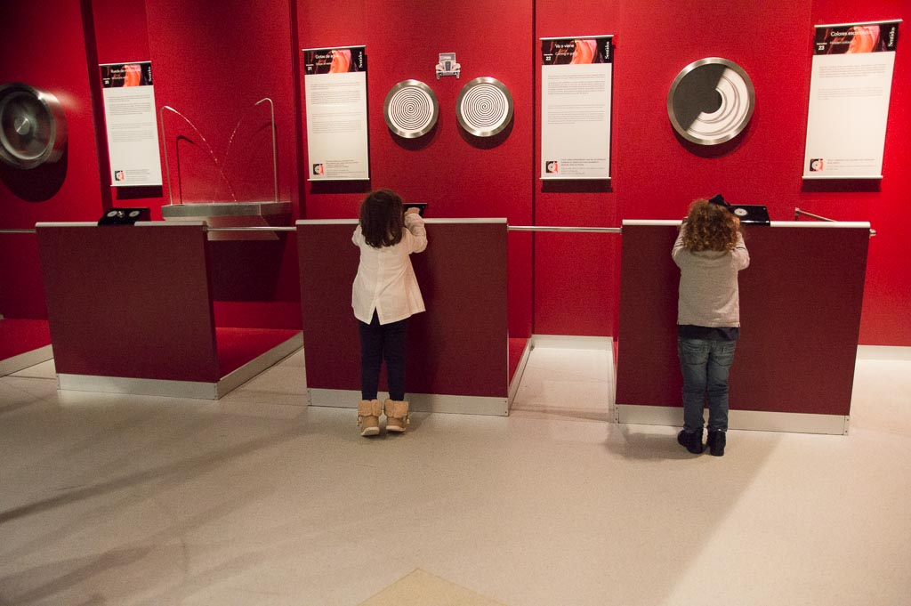
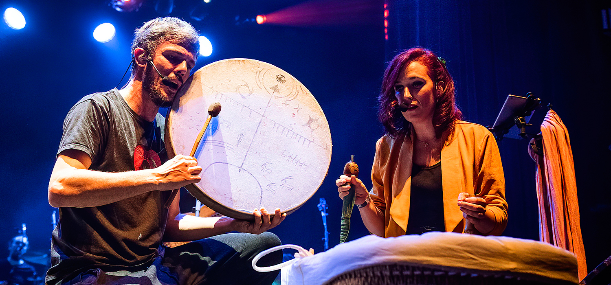

¡BIENVENIDOS! a la sección de recuroso para fomentar la cultura!
ÍNDICE DE RECURSOS:
Una de las mejores formas para estimular la creatividad de los más peques es leerles cuentos pero con un toque especial: ve variando los acontecimientos que van sucediendo a lo largo de la historia.
Otra forma perfecta para fomentar la lectura es que creen un cuento desde cero.

Visitar un museo o acudir a una exposición puede ser un plan muy estimulante, ya no solo por el hecho de acudir a un entorno nuevo lleno de experiencias nuevas, sino por los enormes beneficios que tiene para ellos la cultura o el arte. Es muy importante que conozcan su mundo, sus antepasados y que sepan valorar obras de arte para desarrollar correctamente la creatividad.Además, si les preguntas sobre lo que habéis visto en la visita les harás reflexionar y analizar, algo muy importante para los niños.
Llevar a los niños al teatro es una de las actividades recreativas más completas y recomendadas para disfrutar con ellos. El teatro es una ventana creativa que incentiva el conocimiento y la cultura en todos sus asistentes, sobre todo en los infantes. Cuando sube el telón, el arte se encarga de transmitir emociones, valores y sentimientos.
